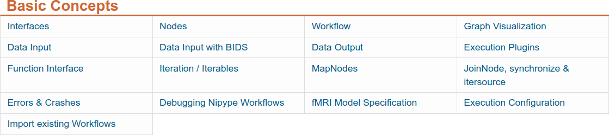

name: inverse layout: true class: center, middle, inverse --- # Nipype # Interfaces & Workflows ## Learn and understand the basics ### ~90min --- name: content class: left layout: false name: intro .left-column[ ## Basic Concepts ### ~90min ] .right-column[ Nipype is very easy to learn, but nonetheless requires the understanding of some basic concepts.  For this reason, please go through the section `Basic Concepts` under [`nipype_tutorial/index.ipynb`](../../../notebooks/nipype_tutorial/index.ipynb). ] --- ## Recap of Basics - Part 1 * **Interface**: Module to run well-defined tasks (i.e. smoothing, skull extraction, etc.) ```python from nipype.interfaces.fsl import BET BET.help() # To get help ``` -- * **Node**: Wraps around an interface and lets you connect them to each other ```python from nipype import Node bet = Node(BET(frac=0.3), name='bet_node') ``` -- * **Workflow**: Collection of nodes, connected in a directed fashion (i.e. graph) ```python from Nipype import Workflow wf = Workflow(name="smoothflow", base_dir="/output/working_dir") wf.connect([(smooth, mask, [("out_file", "in_file")])]) ``` -- * **Graph Visualization**: Helps you to better understand a built workflow ```python wf.write_graph(graph2use='colored') ``` --- ## Recap of Basics - Part 2 * **Data Input**: There are many ways to get your data into a workflow, e.g. `DataGrabber`, `SelectFinder`, etc. -- * **Data Output**: There are many ways to keep only desired workflow output, e.g. `DataSink` -- * **Execution Plugins**: Different ways to run a workflow, i.e. sequential, parallel, on a cluster ```python workflow.run(plugin='Linear') workflow.run(plugin='MultiProc', plugin_args={'n_procs': 4}) workflow.run('SGEGraph', plugin_args={'qsub_args': '-q many'}) ``` -- * **Function Interface**: Shortcut to create your own interface ```python def write_parameter_to_txt(my_parameter): import numpy as np out_file = 'new_parameter.txt' np.savetxt(out_file, [my_parameter], fmt='%d') return out_file write_paraemter = Node(Function(input_names=['my_parameter'], output_names=['out_file'], function=write_parameter_to_txt), name='write_paraemter') ``` --- ## Recap of Basics - Part 3 * **Iterables** (left): Allows to iterate over a specific parameter, e.g. subject name, smoothing kernel ```python isosmooth = Node(IsotropicSmooth(), name='iso_smooth') isosmooth.iterables = ("fwhm", [4, 8, 16]) ``` * **MapNode** (right): Allows to iterate over a specific parameter, e.g. subject name, smoothing kernel ```python from nipype import MapNode gunzip = MapNode(Gunzip(), name='gunzip', iterfield=['in_file']) gunzip.inputs.in_file = ['func01.nii.gz', 'func02.nii.gz', 'func03.nii.gz'] ``` <img src="../../../notebooks/nipype_tutorial/static/images/iterables.png" height="180"> <img src="../../../notebooks/nipype_tutorial/static/images/mapnode.png" height="180"> --- ## Recap of Basics - Part 4 * **JoinNode** (left): Like a MapNode that units again a previous `iterable` conjunction * **Synchronize** (middle): Iterate over a list of parameters in `zipped` way * **Itersource** (right): Allows you to expand a downstream iterable based on a mapping of an upstream iterable <img src="../../../notebooks/nipype_tutorial/static/images/joinnode.png" width="190"> <img src="../../../notebooks/nipype_tutorial/static/images/synchronize_1.png" width="250"> <img src="../../../notebooks/nipype_tutorial/static/images/itersource_1.png" width="250"> --- layout: true class: center, middle, inverse --- name: questions # Questions?